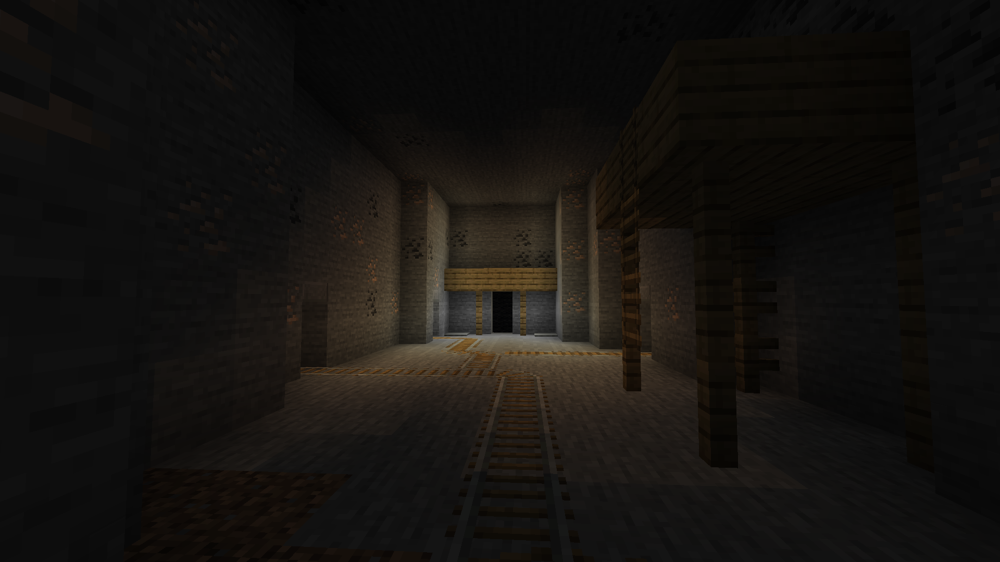

Mining is one of the most important activities for progression. Most crafting recipes require an item obtained by mining!
Block List
Stone, Coal Ore, Iron Ore.
The Mines are the main mining area. They are open from 08:00 to 16:00. Once the mines close everyone inside will be teleported out and won't be able to enter until 08:00.
The Deep Caves are unlocked at LVL 2. The caves follow the same schedule as The Mines. The Deep Caves consist of
random rooms that are traveled to after mining 75 ores. Loot chests and Gemstones can be found in these rooms. There is also one puzzle
room as of writing this.

Archaeology can be done by breaking coarse dirt with a brush. Brushes have 5 uses and change inventory slots while using. Archaeology can be a useful way to gather ingots and Shiny Stones quickly. Enchanted books can also be found.
Getting a better pickaxe can reduce the stamina cost and increase the speed of mining. Tnt can also be used in the Deep Caves to travel to a new room quickly.
Made by Cow